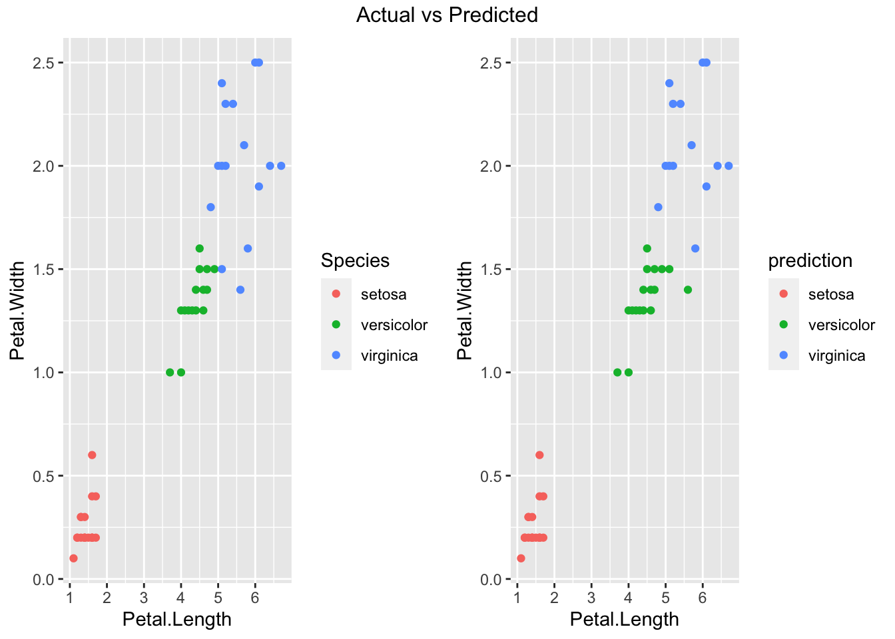

Probability theory is an important aspect of many machine learning algorithms since in reality there are very few things that we know with complete certainty.
Two important properties of probability are that probabilities are between 0 and 1, with 0 being impossible and 1 being certain, and that the sum of all probabilities of an event have to equal 1.
To describe the probabilities that random variable \(x\) can take on each specific outcome of the event we can use a probability distribution. There are two different types of probability distributions: discrete and continuous.
Discrete Distributions
Discrete distributions are when the outcomes are finite like heads or tails of a coin. A Bernoulli distribution is an example of a discrete distribution where there are only 2 potential outcomes. The probability mass function of a Bernoulli distribution of a fair coin flip is P(x) = {0.5 if x = heads, 0.5 if x = tails}.
Continuous Distributions
Continuous distributions have infinitely many outcomes, for example heights. One well known continuous distribution is the normal distribution which can be visualized with the bell curve.
Unlike discrete distributions where the value of the probability mass function at \(x\) is the probability of of \(x\), in the continuous distribution since there are infinitely many outcomes the probability of X = \(x\) is actually 0. All of our probabilities must sum to 1, when looking at the normal distribution curve that means that the area under the curve must also be 1. So instead of using a summation, we look at intervals in the continuous case.
So instead of looking at the probability of an event at a specific value which we now know is 0, we can use ranges of X and calculate the area under the curve for those ranges to find meaningful probabilities in the continuous case. We can use something called the cumulative distribution function which takes the probability density function we saw above and calculates the area under the curve to the left of \(x\). This is what the CDF of the normal distribution looks like:
Now we can see probabilities much easier such as \(P(x < -3)\) is nearly 0 and \(P(x < 3)\) is nearly 1.
Conditional Probability Distributions
In order to understand Bayes’ Rule we first must understand conditional probabilities. Oftentimes, the probabilities we are interested in are dependent on another event. The conditional probability of x given y is:
By multiplying by \(P(y)\) we get the chain rule of probability: \(P(x,y) = P(x|y) P(y)\)
Bayesian Probability and Bayes’ Rule
A well known probability philosophy is Bayesian Probability. Unlike an objective perspective where known beliefs are used, a subjective perspective where the observer’s own learnings and experience are used, Bayesian probability combines prior beliefs with observations. We can use Bayes’ Rule to calculate our probabilities.
Back to our chain rule, we can write equivalent statments
- \(P(x,y) = P(x|y) P(y)\)
- \(P(x,y) = P(y|x) P(x)\)
If we set these to be equal and divide by \(P(y)\) we get Bayes’ Rule:
This rule allows us update our beliefs as we gain more observations. The prior probability, which is what initial probability of an event, and the posterior probability is the probability after adding in our new observation.
Naive Bayes
Naive Bayes use Bayes’ Rule but with a couple key assumptions:
- Predictors are conditionally independent
- All features contribute equally to the outcome
Although this may not lead to the most complete and accurate model in real life, it allows us to simplify the problem.
library(caret)
library(e1071)
library(caTools)# split data into train and test splits
set.seed(222)
index <- sample(2, nrow(iris), replace = TRUE, prob = c(0.7, 0.3))
train <- iris[index==1,]
test <- iris[index==2,]bayes <- naiveBayes(Species ~ ., data = train)
bayes
Naive Bayes Classifier for Discrete Predictors
Call:
naiveBayes.default(x = X, y = Y, laplace = laplace)
A-priori probabilities:
Y
setosa versicolor virginica
0.3168317 0.3465347 0.3366337
Conditional probabilities:
Sepal.Length
Y [,1] [,2]
setosa 5.021875 0.3526255
versicolor 5.874286 0.5505841
virginica 6.558824 0.6339475
Sepal.Width
Y [,1] [,2]
setosa 3.475000 0.3698300
versicolor 2.768571 0.2997758
virginica 2.941176 0.3026325
Petal.Length
Y [,1] [,2]
setosa 1.475000 0.1703886
versicolor 4.211429 0.5166472
virginica 5.538235 0.5570565
Petal.Width
Y [,1] [,2]
setosa 0.240625 0.1011526
versicolor 1.320000 0.2111593
virginica 2.029412 0.2480584We see that our Naive Bayes function calculates our prior probabilities and the conditional probabilities for our predictors and this can be used to make predictions on our data.
prediction <- predict(bayes, newdata = test)
prediction_df <- cbind(test, prediction)
confusion <- table(test$Species, prediction)
confusionMatrix(confusion)Confusion Matrix and Statistics
prediction
setosa versicolor virginica
setosa 18 0 0
versicolor 0 15 0
virginica 0 2 14
Overall Statistics
Accuracy : 0.9592
95% CI : (0.8602, 0.995)
No Information Rate : 0.3673
P-Value [Acc > NIR] : < 2.2e-16
Kappa : 0.9387
Mcnemar's Test P-Value : NA
Statistics by Class:
Class: setosa Class: versicolor Class: virginica
Sensitivity 1.0000 0.8824 1.0000
Specificity 1.0000 1.0000 0.9429
Pos Pred Value 1.0000 1.0000 0.8750
Neg Pred Value 1.0000 0.9412 1.0000
Prevalence 0.3673 0.3469 0.2857
Detection Rate 0.3673 0.3061 0.2857
Detection Prevalence 0.3673 0.3061 0.3265
Balanced Accuracy 1.0000 0.9412 0.9714We see that we get a model accuracy of 95% which is very good. Let’s look at where our misclassification comes from.
library(gridExtra)
p1 <- ggplot(prediction_df, aes(x = Petal.Length, y = Petal.Width, color = Species)) +
geom_point()
p2 <- ggplot(prediction_df, aes(x = Petal.Length, y = Petal.Width, color = prediction)) +
geom_point()
grid.arrange(p1, p2, nrow = 1, top="Actual vs Predicted")
We can see the 2 points that were misclassified on the right side of the versicolors there are 2 virginicas that were classified incorrectly using our Naive Bayes.
Images used can be found here